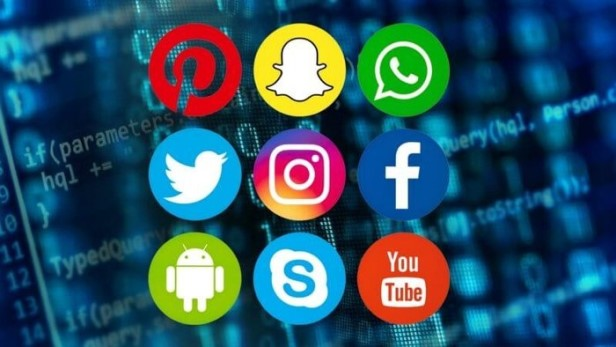
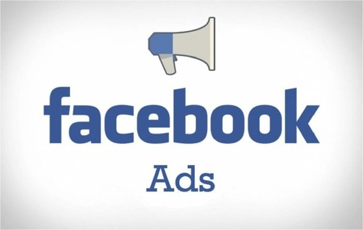

Yıllardır sahte kullanıcılar yaratarak reklam gelirlerinden servet kazanan sosyal medya platformları ağır darbe aldı. Reklamlarını askıya alan şirketler arasına Coca-Cola, Levi's ve Lipton, Magnum, Persil gibi küresel markaların bağlı olduğu Unilever de katıldı. Sosyal medyaya reklam ambargosu kampanyası, Amerika'da bir dizi sivil toplum kuruluşunun, ırkçılık ve nefret söylemine izin verdiği gerekçesiyle Facebook'a reklam verilmemesi çağrısıyla başlamıştı.
Coca-Cola CEO'su ve Başkanı James Quincey, Cuma günü yaptığı açıklamada, "Dünyada ırkçılığa yer olmadığı gibi sosyal medyada da yok" diyerek tüm sosyal medya platformlarında reklamları 30 gün boyunca durduracaklarını bildirdi. Quincey, "Sosyal medyadaki iş ortaklarımızdan daha fazla şeffaflık ve sorumluluk bekliyoruz" dedi..
Haberin etkisi borsada kendini kısa sürede gösterdi. Facebook ve Twitter'ın hisseleri, haftanın son gününde ortalama yüzde 7 değer kaybetti..
Gıda sektöründe Algida, Lipton, Knorr, Calve, Hellmann's; temizlik alanında Omo, Domestos, Yumoş, Cif ve kişisel bakım ürünlerinde ise Dove, Clear, Elidor, Rexona, Axe, Signal, Toni&Guy gibi markaları çatısında bulunduran Unilever, konuyla ilgili bir açıklama yayınladı. Şirket, "Sorumluluk çerçevemiz ve ABD'deki kutuplaşmış atmosfer göz önüne alındığında en az yıl sonuna kadar Facebook, Instagram ve Twitter platformunda, ABD'de marka reklamı yayınlamamaya karar verdik. Buralara reklam vermek şu anda insanlara ve topluma değer katmayacak. Durumu izleyeceğiz ve gerekirse mevcut konumumuzu tekrar gözden geçireceğiz" denildi..
Unilever'ın küresel medya genel başkan yardımcısı Luis Di Como ise verdiği röportajda, "Mevcut kutuplaşma ve ABD'de yapılacak seçimleri düşünürsek, nefret söylemiyle ilgili daha fazla yaptırım uygulanması gerekiyor" ifadelerini kullandı. Reklam analiz şirketi Pathmatics'e göre Unilever, 2019'da Facebook'a verdiği 42 milyon dolarlık reklamla bu alanda 30. sırada yer aldı..
Sosyal medyaya bir kötü haber de Unilever'ın en büyük rakiplerinden biri olan P&G'den geldi. Ariel, Gilette, Braun, Pantene, Head&Shoulders, İpana, Oral-B, Prima gibi dünyaca ünlü markaları bünyesinde bulunduran grup da benzer bir karar aldı. P&G, "Reklamlarımızı, nefret ve ayrımcılık söylemleri ile dolu olan platformlardan çekiyoruz" açıklamasını yaptı.
Küresel şirketler, yıllarca sosyal medya sitelerine reklam vererek paralarını adeta çöpe atıyorlardı. Öyle ki bu sitelerde reklamların muhatabının çoğu zaman gerçek kişiler değil, robotlar olduğu biliniyor. Birçok platformda belli ücret ödendiğinde sahte izlenme ve görüntülenme almak mümkün. Dolayısıyla sosyal medyaya ödenen reklam ücretleri karşılık bulmuyor, reklamlar hedefine ulaşmıyordu.
İnternetin bot dünyası yalnızca 'influencer' olarak tabir ettiğimiz genç Youtuberların kullandığı bir silah değil. Facebook'un sattığı reklam görüntülenmelerinde de bot kullandığı ortaya çıktı. Facebook'un video görüntüleme sisteminin %900'e kadar sahte olduğu tespit edildi.
Yani Facebook'un şirketinizden 10 bin kişi görüntüledi deyip buna karşılık sizden ödeme aldığı reklamı yalnızca bin kişi görüntülemiş. Geri kalan 9 bin kişi gerçek değil..
Dünya genelinde on binlerce şirket bu sahtekarlıktan mağdur olurken Facebook bu yaptığının karşılığında yalnızca 40 milyon dolar tazminat ödemek ile mahkum edildi. Şirketin o yıl reklamdan kazandığı para ise tam 22 milyar dolar. Yani Facebook botlarla kazandığı bu paranın yaptığı işgüzarlık ortaya çıkmasına rağmen sadece yüzde 0.18'ini geri ödedi.